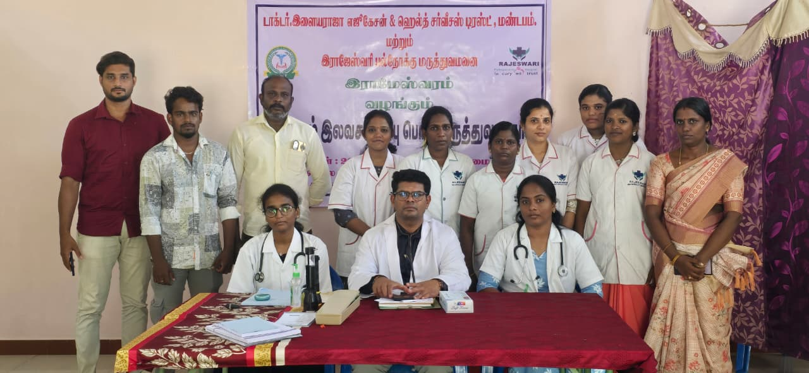
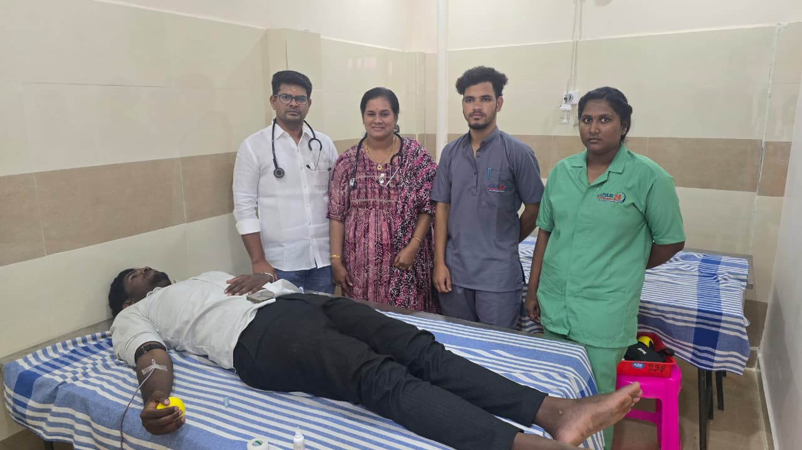
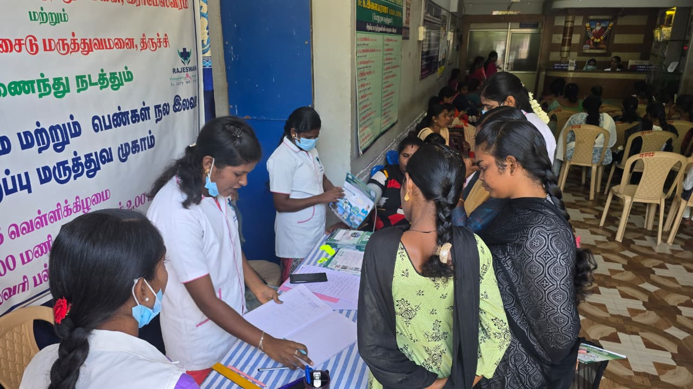
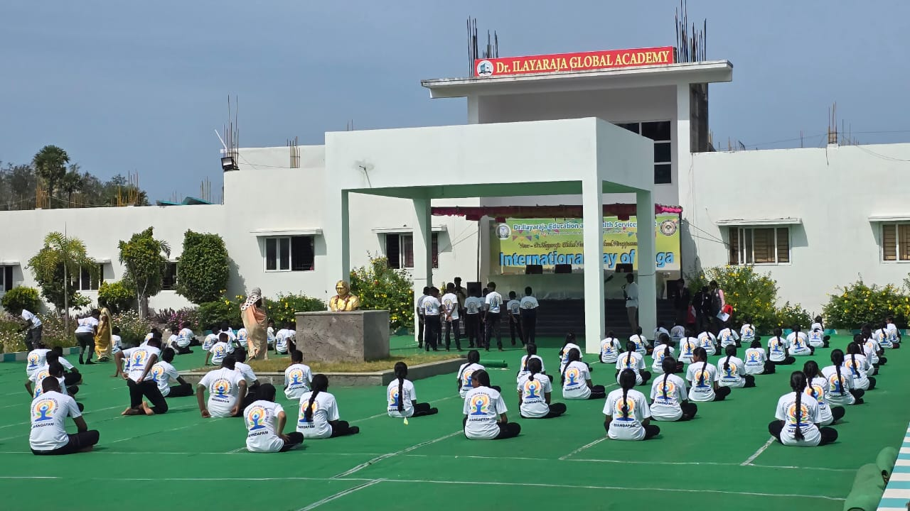
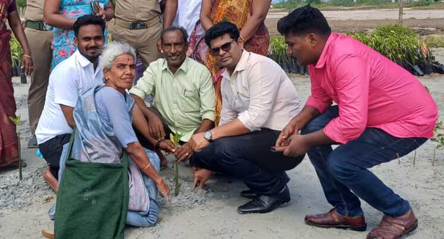
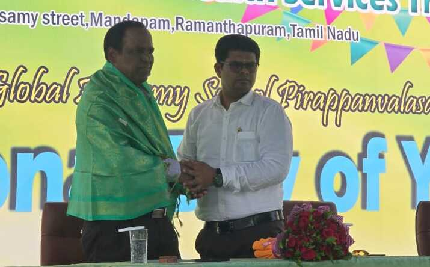

Dr. K. Ilayaraja
MBBS, DPMRPhysician | Rural Health Systems Builder | Social Impact Leader
Highly dedicated medical professional, healthcare administrator, and social entrepreneur with extensive experience in public health services, hospital leadership, and community health initiatives. Known for delivering accessible and affordable healthcare to rural communities across Ramanathapuram district. Founder of multiple healthcare and educational institutions committed to improving social welfare, maternal health, and rural education.

Contact Info
+91 76049 90439 | +91 89393 59115
Mandapam, Ramanathapuram District, Tamil Nadu, India
Area of Expertise
Education
D.PMR (55%)
Madras Medical College, Chennai, Tamil Nadu
MBBS (62%)
Tirunelveli Medical College, Tirunelveli, Tamil Nadu
Higher Secondary (Class 12) (90%)
Jeevana ICSE School, Madurai, Tamil Nadu
Secondary School (Class 10) (80%)
Jeevana ICSE School, Madurai, Tamil Nadu
Professional Experience
(16 Years)
Chief Medical Officer
Rajeswari Hospitals, Multiple Branches, Tamil Nadu
- Provided strategic leadership in clinical governance and hospital administration, ensuring effective healthcare management.
- Led multidisciplinary medical teams to maintain high standards of patient care, safety, and service delivery.
- Developed healthcare delivery systems to improve accessibility and quality of services for rural communities.
- Implemented preventive healthcare and community awareness programs, strengthening institutional infrastructure and operational efficiency.
(3 Years)
Block Medical Officer
Primary Healthcare Center, Uchipuli, Tamil Nadu
- Conducted special health awareness programs for antenatal mothers to improve maternal and infant health outcomes, helping reduce mortality and morbidity below national targets.
- Successfully implemented key government healthcare schemes including School Health Program, Mobile Health Services, CMCHIS, and Maternal & Child Care initiatives
- Ensured effective block-level administration, enabling timely program implementation and early grievance redressal.
(2 Years)
Medical Officer
Government Primary Healthcare Center, Thangachimadam, Tamil Nadu
- Increased outpatient attendance through improved healthcare services and community outreach.
- Encouraged antenatal mothers from below-poverty-line families to opt for safe institutional deliveries, improving maternal and neonatal health outcomes.
- Led malaria control initiatives during endemic outbreaks, implementing rapid response measures to contain and suppress the spread.
- Effectively implemented the School Health Program and referred identified cases to tertiary centres for timely medical intervention.
(2 Years)
Medical Officer
Government Primary Healthcare Center, Mandapam, Tamil Nadu
- Increased Patient Turnout and Institutional Deliveries through improved clinical services and community trust.
- Strengthened preventive healthcare initiatives and effectively implemented Vector-Borne Disease Control Programs.
- Established a dedicated Communicable Disease Unit within the PHC to improve Disease Management and Infection Control.
(2 Years)
School Director
Raja Institution, Mandapam, Tamil Nadu
- Identified learning challenges among rural students and implemented targeted academic support programs to improve learning outcomes.
- Developed the IE CARE (Intensive Educational Care Unit) curriculum to support slow learners and bring students to a common academic standard.
- Conducted continuous faculty development programs and organised expert-led seminars to enhance teaching quality and support high-performing students.
- Led the institution to achieve District and State-Level Academic Ranks, strengthening overall academic excellence.
Institutional Leadership & Founding Initiatives
(8 Years)
Founder
Dr. Ilayaraja Education & Health Services Trust, Tamil Nadu
Established with the mission of expanding healthcare access and educational opportunities in rural communities.
Key Initiatives
- Community health outreach and preventive healthcare programs.
- Educational support initiatives for underserved students.
- Rural health awareness campaigns among fishing and farming communities.
- Integrated health and education development programs.
(8 Years)
Founder & Chairman
Dr. Ilayaraja Nursery & Primary School, Mandapam, Tamil Nadu
- Established the institution to provide quality foundational education for rural children.
- Introduced innovative learning frameworks and inclusive education systems.
- Ensured faculty development and continuous academic improvement.
- Promoted holistic development and strong educational foundations among students.
(7 Years)
Founder & Chairman
Dr. Ilayaraja Global Academy, Pirapanvalasai, Tamil Nadu
- Founded the academy to promote globally relevant education in rural regions.
- Developed modern learning environments encouraging creativity, critical thinking, and skill-based education.
- Strengthened community engagement through education-driven development initiatives.
Key Initiatives
- Developed the IE CARE educational framework supporting slow learners through structured academic intervention.
- Strengthened maternal health awareness and safe delivery practices in rural communities.
- Promoted preventive healthcare and early disease detection through school health programs.
- Advanced integrated rural development through healthcare and education initiatives.
VISION & INSPIRATION
Guided by the PURA (Providing Urban Amenities in Rural Areas) development philosophy of A. P. J. Abdul Kalam, with a mission to transform rural communities through accessible healthcare, quality education, and sustainable development.
Institutions Established and Managed
Integrated healthcare and education ecosystem managed under leadership and administration.
Healthcare Institutions
Rajeswari Group of Hospitals
- Rajeswari Clinic – Thangachimadam
- Rajeswari Clinic – Mandapam
- Rajeswari Multi Specialty Hospital – Rameswaram
- Pulse 24 Maternity & Health Care Center – Pamban
Diagnostic Services
- Karthigai Samy Scans – Mandapam
Educational Institutions
- Dr. Ilayaraja Global Academy – Pirapanvalasai
- Dr. Ilayaraja Nursery & Primary School – Mandapam
Education & Health Services Trust
- Dr. Ilayaraja Education & Health Services Trust – Mandapam
Community Development and Institutional Initiatives
In 2018, I founded the Dr. Ilayaraja Education and Health Services Trust with the belief that education and healthcare are fundamental human rights. The Trust focuses on serving underserved communities by expanding access to medical services and enhancing educational opportunities.
With the support of committed partners and volunteers, the Trust continues to implement programs that create sustainable and meaningful social impact in rural and coastal communities.
- Established the Dr. Ilayaraja Education and Health Services Trust to strengthen healthcare and education access in rural areas.
- Developed initiatives that combine healthcare services, educational support, and community welfare programs.
- Focused on improving opportunities for underserved rural and coastal communities.
- Promoted long-term community development through sustainable social initiatives.
These initiatives are inspired by the PURA (Providing Urban Amenities in Rural Areas) development model envisioned by Dr. A. P. J. Abdul Kalam, which emphasizes transforming rural regions through improved infrastructure, essential services, and sustainable development.
Through the integration of healthcare delivery, educational empowerment, and community development, the mission is to create a future where rural populations have equal access to opportunities, services, and quality of life comparable to urban regions.
Professional Contributions
Contributions in Education
As a School Director, I recognized the learning challenges faced by rural students, particularly those from fishing and farming communities. To address these issues:
- Identified learning difficulties among rural students and introduced targeted academic support systems.
- Developed a specialized curriculum for slow learners and established the IE Care (Intensive Educational Care Unit) to provide structured academic intervention.
- Served as a resource person by conducting continuous teaching and faculty development programs to enhance teaching effectiveness.
- Organized academic seminars with subject experts to mentor and guide high-performing students.
- These initiatives enabled the institution to achieve district- and state-level academic ranks.
These efforts ensured that students from rural, fishing, and agricultural communities receive educational opportunities comparable to urban standards, creating equal opportunities for academic and professional growth.
Contributions in Public Health Administration
- Conducted special health awareness programs for antenatal mothers to promote safe motherhood practices.
- Helped reduce maternal and infant mortality below national targets through community interventions.
- Implemented key government health programs including the School Health Program, Mobile Health Services, and CMCHIS.
- Strengthened maternal and child welfare programs benefiting economically disadvantaged communities.
- Provided strong administrative leadership ensuring effective program implementation and grievance redressal.
Contributions as Medical Officer – Thangachimadam
- Increased the number of outpatients attending the health facility through improved service delivery.
- Encouraged antenatal mothers from below poverty line families to opt for safe institutional deliveries.
- Implemented intensive malaria control programs during endemic periods and prevented outbreaks.
- Successfully implemented the School Health Program, identifying health issues among students and referring cases for early diagnosis and treatment.
Community Impact
Social Service Activities
- Home Care for elderly and disabled patients through regular home visits.
- 24/7 Emergency Medical Services through Rajeswari clinic branches.
- Free Village Medical Camps twice a month for economically disadvantaged communities.
- Complimentary camps include blood tests, thyroid screenings, glucose assessments, and free consultations.
- Free Medical Treatment at Shrimath Pamban Swamigal Temple I provide free medical care for two hours daily.
- Scholarships for Students Preparing for Competitive Exams such as IAS, IPS, TNPSC, SSC, Banking, and Railway, I provide monthly scholarships to 87 students.
COVID-19 Assistance
- Operated three clinics 24/7 supporting nearly 10,000 residents.
- Distributed herbal immunity drinks and medicines to 10,000 people at risk.
- Delivered essential supplies to 1,000 families affected by livelihood loss during the pandemic.
- Provided free PPE kits to more than 100 ambulance drivers and nurses for five months.
Key Initiatives
- Increased Institutional Deliveries at Uchipuli PHC.
- Introduced the First Uterus Removal Surgery in a primary health centre in Tamil Nadu.
- Established Amma Ward for maternal healthcare.
- Developed separate facilities for Mother-Child Care and Infectious Diseases.
- Upgraded Drug Record Management System, ensured 24/7 electricity and water supply at Uchipuli PHC.
- Achieved ISI quality certification and organized daily scans for 30+ Pregnant Women.
- Implemented field programs to Control Dengue and Malaria Outbreaks.
- Established a dedicated Clinic for Pregnant Women to ensure they receive safe healthcare services Without Exposure to Other Infections, especially during the COVID-19 Period.
Public & Environmental Engagement
- On behalf of the Ramanathapuram District Forest Department, a special summer camp on Climate Change was organized for government school students in Ramanathapuram.
- Conducted International Yoga Day awareness program for school students, with Prof. Dr. A. Rajendran (Chartered Chemist, Scientist, Herbal Clinician) as the chief guest, who delivered an awareness talk on the importance of yoga and how to practice it in daily life.
- Participated as guest of honour in International Sand Dune Day, a special program was conducted by Arulagam Trust, Rameswaram.
- Actively participated in a mangrove plantation drive on International Mangrove Day, carried out at Kunthukal in Rameswaram Island under the guidance of the Forest Department. The program was inaugurated by District Forest Officer Mr. Jagadeesh Bagan, and a total of 600 mangrove saplings were planted.
Visionary Activities & Plans
- Developed “IE-Care” curriculum for academically struggling students.
- Constructed Dr. Ilayaraja Global Academy following green building principles.
- Planned environmental initiatives including planting 10,000 palm trees to address floods, soil erosion, and water scarcity in Ramanathapuram district.
- Expanding 24×7 healthcare services in remote rural areas.
Awards & Recognitions
- Best Doctor Award – Ramanathapuram District (2013–2014 & 2014–2015), awarded by the District Collector.
- State-Level Achievement Award – Uchipuli Primary Health Centre, for strengthening primary healthcare systems.
- Recognition as “People’s Doctor” in Ramanathapuram District for affordable and accessible rural healthcare.
- Community Health Excellence Recognition for expanding healthcare and education services to over 100,000 people.
- Public Service Recognition during COVID-19 for medical support, PPE distribution, and essential supplies to vulnerable communities.
Gallery






Declaration
I hereby declare that the information provided above is true and correct to the best of my knowledge and belief. I take full responsibility for the accuracy of the details mentioned in this portfolio.
Signature
Dr. K. Ilayaraja